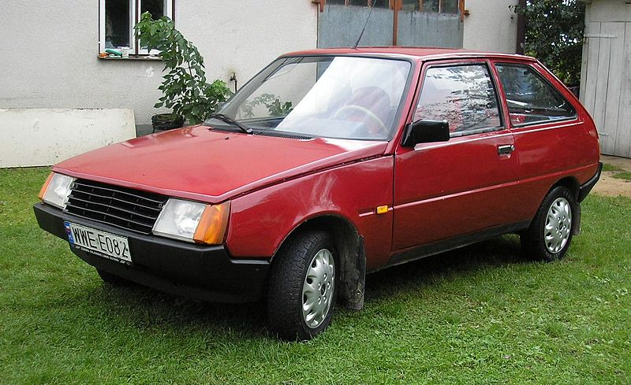

Якою була "Таврія"
Прототипом для створення самого популярного українського автомобіля («Таврії», а потім і «Славути») стала машинка, «злизана» з англійської Астин Міні (Austin Mini), машини кінця 60-х, яку рекламні проспекти називали «всередині вона більша, ніж зовні». Примітно, що цей маленький автомобільчик обігнав на ралі таких іменитих конкурентів як FIAT Abarth 600, Volkswagen 1200L і навіть Porsche 911!
Ще в 1963р. на запорізькому заводі «Комунар» працював талановитий і допитливий інженер Володимир Стешенко, який запропонував створити на рідному заводі маленький передньопривідний автомобіль. Хто не пам'ятає, це був час, коли перші зразки «запорожців» ЗАЗ-966 і ЗАЗ-968 тільки ставилися на заводський конвеєр. Природно, начальство ініціативу не схвалило, але робота над «Перспективою», «бабусею» сьогоднішньої «Славути» почалася ще тоді. На громадських засадах, уривками, майже підпільно. Автомобіль був повністю розроблений тільки до 1978р. Однак заводське керівництво порахувало, що й «запорожців» випускається недостатньо, на нову розробку своїх конструкторів ніяк не відреагувало.
І ось, почув Бог молитви конструкторські. У тому ж 1978р. союзний Минавтопром видав «Комунарові» завдання спроектувати абсолютно нову передньопривідну модель ЗАЗ-1102. Союзні чиновники були немало здивовані тим, що вже через кілька місяців «коммунарці» видали дослідний зразок, що пройшов випробування і в пісках пустелі Каракуми, і в сибірських снігах. 
Отже, на конвеєр модель ЗАЗ-1102 була поставлена в 1988р. Про досконалішу модифікацію, на яку було витрачено стільки сил і ресурсів, вже ніхто й не згадував. Назвали машинку звучним ім'ям «Таврія» - стародавньою назвою Кримського півострова. Модель постійно удосконалювалася, оновлювалася іноді кілька разів на рік. До речі, автомобілю «Таврія» був присвячений радянський рекламний ролик, який завоював у Каннах «Бронзового лева» (номінація «Торгова реклама»). Водій заправляв «Таврію» з своєї запальнички «Зиппо», щоб підкреслити економічність даної моделі автомобіля.
Останні роки життя
З набуттям Україною незалежності потік грошей та інших ресурсів на Запорізький автомобільний завод припинився. Виробництво практично встало. Інвестиції прийшли, звідки не чекали - від корейської фірми «Деу» (Daewoo). На їхні гроші була запущена модернізована «Таврія-Нова».У нову конструкцію машини було внесено більше трьох сотень змін. Заводська система якості отримала міжнародний сертифікат ISO 9001. Невисока ціна, маневреність, економічність і висока для свого класу місткість дозволили «Таврії» знайти свою ринкову нішу в той непростий час. Приблизно 40% машин цієї моделі експортувалися за кордон - до Росії, Білорусії, Молдови, Казахстану, Сирії, Греції.
Остання модернізація «Таврії» - ЗАЗ-1103 «Славута». Випускалася з 1999р. і по кінець січня 2011-го. 11 років на конвеєрі! Кузов рідкісної модифікації, псевдоседан або ліфтбек. У порівнянні з класичною «Таврією» мала безліч дрібних технічних доробок, наприклад, повністю оновлену гальмівну систему.
Всього випускалося 13 (число-то яке містичне!) моделей «таврійського» сімейства. Але, як було сказано ще задовго до нас, все проходить. Минув і час «Таврії». А остання машина «таврійського сімейства» була продано 10 лютого 2011 на Інтернет-аукціоні. Все минає. Ось тільки на душі якось ... не дуже. Прощай, «Таврія».